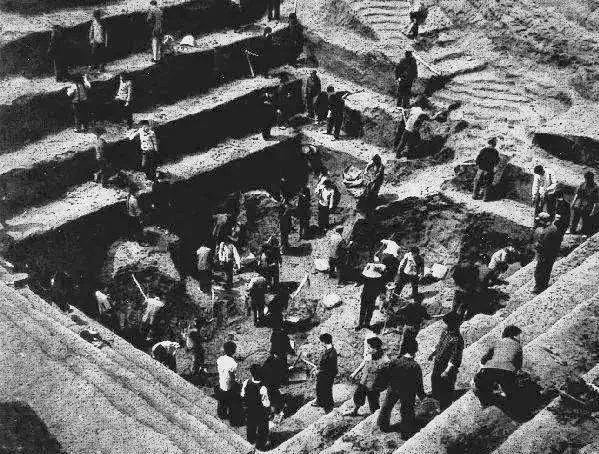
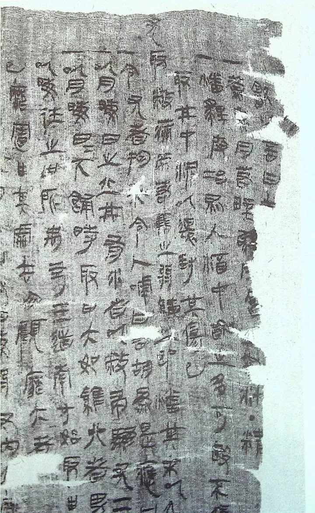
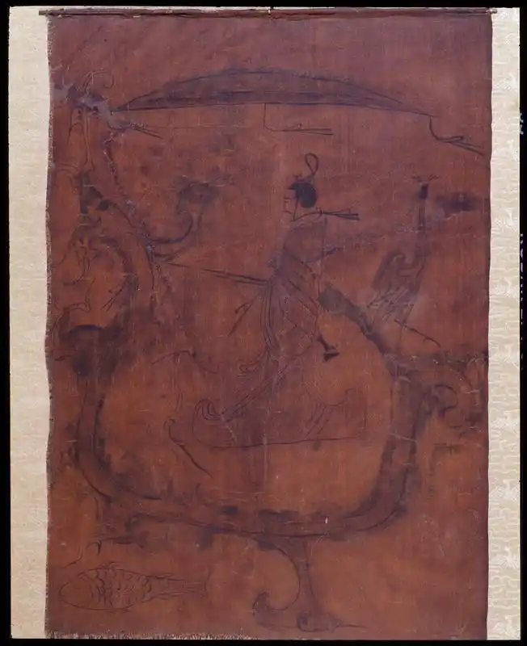
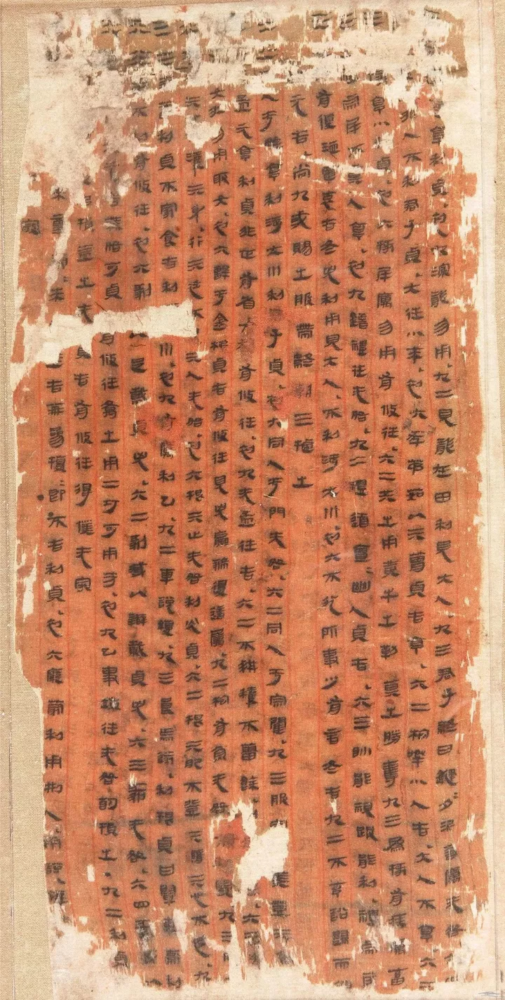
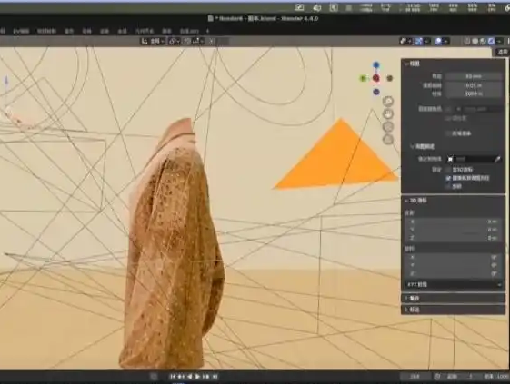

缣帛档案，是指以丝织品（如绢、帛、缣、素等）为载体的文字记录。在纸张尚未普及的古代，缣帛因其质地轻软、便于携带和保存，成为继甲骨、金石、简牍之后的重要书写材料，尤其用于绘制地图、抄写典籍、记录重要政令。
战国时期，随着丝织业的发展和书写需求的提升，缣帛档案逐渐盛行。其中，长沙子弹库楚帛书和长沙马王堆汉墓帛书是至今最具代表性的缣帛档案遗存，为世人揭开了丝帛之上千年文脉的神秘面纱。

1942年，长沙子弹库楚墓中出土了一件完整的丝帛文献——楚帛书，这是目前所见最早的缣帛档案，内容涉及神话、天象与祭祀，其图文并茂的形式，展现了战国时期楚地独特的宇宙观和信仰体系。
1973年，长沙马王堆汉墓再次震惊世界，出土了一大批西汉初期的帛书，包括《周易》《老子》《战国策》《五星占》等，内容涵盖哲学、历史、天文、医学、地图等多个领域，堪称一座丝帛上的“汉代图书馆”。

缣帛是丝织物的统称，包括缣（双丝细绢）、帛（素色丝织品）、素（未染色的生绢）、练（煮熟的丝织物）等。其制作需经过养蚕、缫丝、织造、漂洗等多道工序，工艺繁复，成本远高于竹木简牍。
丝帛表面光滑、吸墨性好，书写流畅，且可任意裁剪、折叠，便于制作长卷和地图。但由于造价高昂，缣帛档案多为宫廷、官府或贵族所用，内容往往较为重要或私密，体现了其“珍贵载体”的属性。

缣帛档案的装帧形式主要有两种：卷轴式和折叠式。卷轴式是将长幅丝帛从左至右卷起，阅读时逐渐展开，两端可加装木轴，便于收放和保存，这种形式后来被纸张所继承，形成了中国传统的卷轴制度。
折叠式则是将帛书按一定宽度反复折叠，形成类似“经折装”的形态，节省空间且便于翻阅。马王堆出土的帛书既有卷轴装，也有折叠装，反映了汉代帛书装帧的多样性，也为后世书籍形制的演进提供了重要参考。

缣帛档案的内容极为丰富，涵盖哲学、历史、天文、地理、医学、兵法和政令等多个领域。楚帛书记载了战国时期的神话与祭祀；马王堆帛书则有《老子》甲乙本、《周易》、《五星占》等珍贵典籍，以及现存最早的实测地图——《长沙国南部地形图》。
此外，帛书中还有医方、驻军图、政令文书等，反映了西汉初期社会生活的方方面面。这些帛书不仅是当时的知识载体，更为后世研究先秦至汉初的学术思想、科技水平和行政制度提供了无可替代的原始档案。

缣帛档案因材质的特殊性，在历史上极为珍稀，历经两千余年仍能完整保存，更是凤毛麟角。楚帛书和马王堆帛书的发现，不仅填补了战国至汉初的文献空白，也为汉字演变、丝织工艺和古代思想史研究提供了弥足珍贵的资料。
目前，楚帛书主要流散于海外（现藏于美国华盛顿赛克勒美术馆），而马王堆帛书则珍藏在湖南省博物馆。该馆及国内外研究机构已通过高清摄影、红外扫描和数字化数据库，对帛书进行全面整理与开放共享，使千年丝帛在数字时代重焕光芒。
缣帛档案，以丝织之柔韧，承载文明之厚重。从楚帛书的神秘天象，到马王堆的浩瀚典籍，它们在丝帛上书写了一个时代的思想与智慧。虽历经沧桑，残损难全，但残留的每一笔朱墨，都是中华文明丝路之上最优雅的档案遗存。